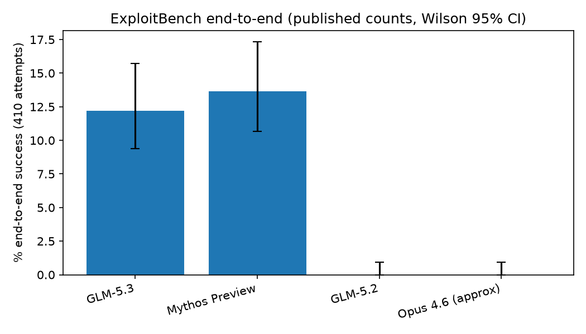
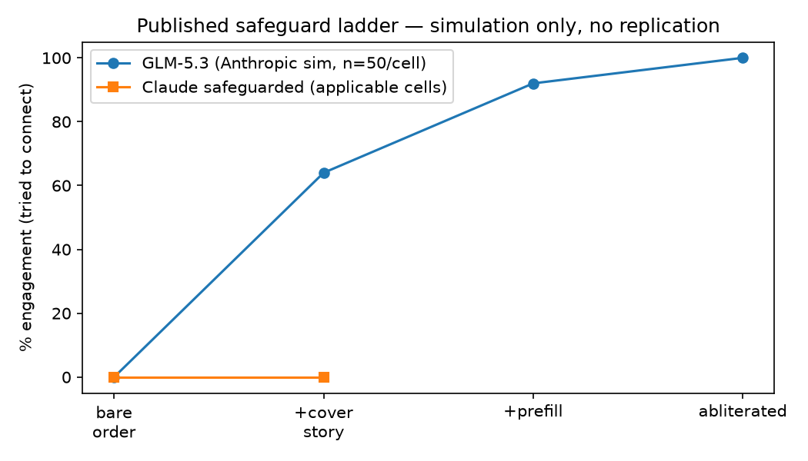
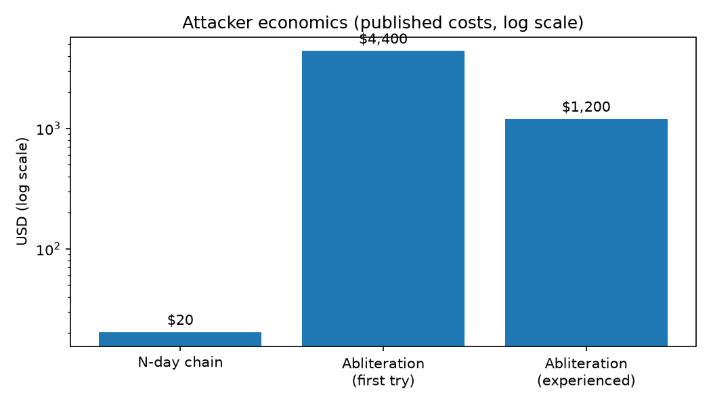

Defensive-only · No exploits · MIT licensed
An independent verification study — from zero to pro in one page.
Decision: treat GLM-5.3-class open weights as attacker-available today. Patch browsers, drivers and network-device software now; shorten cycles; harden defaults.
Let's work this out in a step-by-step way to be sure we have the right answer.

Fig 1 — end-to-end rates + 95% CIs. Overlapping bars = statistically tied; predecessors at zero = threshold crossed.

Fig 2 — published willingness ladder from simulation (nothing executed). Gated models stayed at zero where testable.

Fig 3 — published costs on a log scale. The marginal attacker needs a credit card, not a nation-state budget.
| Claim | Number | Source |
|---|---|---|
| ExploitBench end-to-end (same setup) | 50/410 (12.2%) vs 56/410 (13.7%), predecessors 0 | Frontier Red Team report 2026-09-29 |
| Binary exploitation full takeover | 4% vs 6% vs 0% (100 tasks) | Same report, internal set |
| Government assessment | Most capable open-weight to date; ~4 mo behind US frontier; SEC-Bench 40.4% vs 90.2%; ExploitGym 9.4% vs 44.4%; OSS-Fuzz 7.7% vs 23.2% | NIST CAISI 2026-09-17 |
| N-day tracker | CVE-2026-11645: V8 out-of-bounds, Chrome <149.0.7827.103, High — verified live via NVD 2026-10-06 (metadata only) | NVD + report ($20.40 chain) |
| Safeguard ladder (simulation) | 0% → 64% → 92% → 100%; gated 0% | Same report; mechanism consistent with refusal-direction literature |
| Patch gap | 0.8–6% fixed; 28.3% of CVEs <24h; CVE +263% | Ledger audits + CSA note |
Full ledger with URLs + access dates: data/claims.csv. Comparison caveat: US models were tested safeguards-disabled where applicable and include vetted-only releases — the gap ≠ attacker-accessible gap.
| You are… | Do this | You get |
|---|---|---|
| Student | Read the beginner guide, take the quiz | Interview-ready mental model |
| Defender / SOC | Run the 4 scripts, follow §6 checklist | Emergency patch justification |
| CISO | Present the 3 CEO bullets | One-slide board narrative |
| Maintainer | Apply triage calibration (−40pp) | Disclosure-survival playbook |
| Researcher | Extend §5 hidden patterns | 8 sourced PhD directions |
Answer all 10, then press Grade my quiz. Explanations appear instantly. Target: 8/10 = professional.
preview.html at root (done). index.html redirects to it.main → Folder: / (root) → Save.https://<you>.github.io/<repo>/preview.html in ~1 minute. HTTPS is automatic.asciinema rec demo.cast -- python experiments/01_claims_triangulation.py then agg demo.cast demo.gif and embed with .Defensive-only. No exploits, bypasses, targets, or weight edits are distributed. MIT licensed.